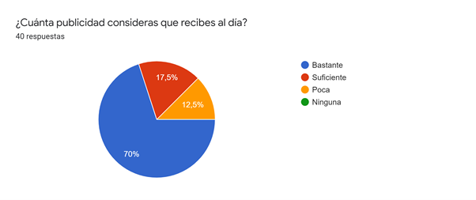

La publicidad, la conocemos como un evento cotidiano, del día a día, pero normalmente no nos ponemos a pensar en cuanto afecta a las decisiones que tomamos, a pesar de muchos estar conscientes también es porque la hemos normalizado. Muchas veces esta es algo excesiva y repetitiva a lo cual ya estamos acostumbrados. Igual la publicidad siempre trata de llamar nuestra atención, estas pueden incluir a personas ejemplares y famosas, música que está de moda y colores de temporada.
Tenemos un ejemplo, el anuncio de la marca italiana “Brioni” en la que el modelo es Brad Pitt, aquí vemos el fenómeno de incluir a una estrella para atraer a más público. Pero eso no es siempre lo que llama nuestra atención como se mencionó anteriormente y en este caso están los colores. En este anuncio publicitario se usa una paleta monocromática de blancos, grises y negros, como la mayoría sabe estos son colores que te hacen ver elegante y decente, al combinar esto con el famoso la gente llega a pensar que se pueden ver así de bien pero no siempre es la realidad.
Hicimos distintas encuestas las cuales resumen en 10 preguntas, con el principal tema de publicidad y lo que con lleva, las demostramos en distintas gráficas de pastel que tenemos. La pregunta más importante es sobre cuanta publicidad reciben las distintas personas encuestadas al día. De las 40 personas, 28 señalaron que para su punto de vista reciben bastante publicidad, el otro 17.5% indicaron que les anuncian lo suficiente y el porcentaje restante considera que es poca. 
Para nosotros la publicidad es una manera de interesarnos en un producto o servicio, y los anuncios nos atraen al incluir colores, eslóganes, imágenes, etc. Consideramos que la publicidad es bastante excesiva ya que es muy repetitiva con los productos o a veces cada 3 “posts” encontramos otra. Al utilizar las redes sociales diariamente siempre tenemos anuncios en estas plataformas (Twitter, Instagram, YouTube y Facebook), y ya que el público joven usa más estos medios se introducen más anuncios dirigidos a ese rango de edad.
Lo que nos llama más la atención en los anuncios son los colores, pero estos tienen que combinar o ser colores vivos para que sea una imagen alegre y bonita. Cada persona tiene gustos diferentes, pero si un anuncio presenta un producto que nos interese podríamos buscarlo para aprender mas sobre él y quizás así ver si vale la pena el objeto a vender.
Ahora analizaremos el slogan y caligrafía de otro anuncio de la conocida marca “Coca-cola”. Como vemos el slogan menciona “Destapa felicidad” con esto podemos pensar que el producto nos va a hacer más felices, y con esta frase puede atraer la atención de muchos consumidores ya que es un producto que consumen personas de varias edades. Igualmente, la tipografía hace que sea algo sencillo y claro para todos los que lo lean identifiquen el mensaje rápidamente. Esto también se toma en cuenta en el titulo de la marca, al siempre estar leyendo el nombre del producto se te puede quedar que si vez una tipografía parecida instantáneamente vas a pensar en el refresco.
Concluimos en que la publicidad los anuncios publicitarios y lo que concierne con eso es mayormente excesiva y los medios utilizan sentimentalismos y datos que llaman la atención para atraer a los consumidores de tal manera que investiguen compren contraten y más llamando la atención.
Bibliografías:https://www.youtube.com/watch?v=iNoUEdkTcsc&ab_channel=Brioni